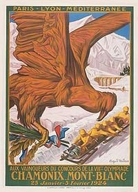
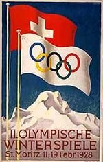
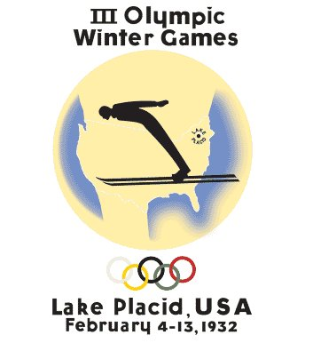
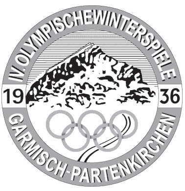
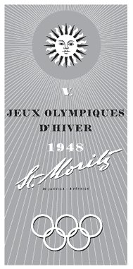
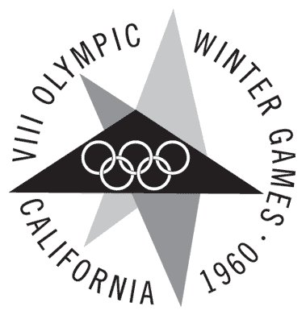
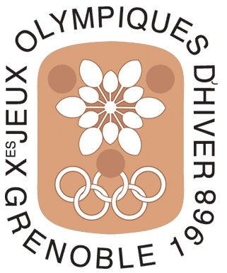

JUEGOS OLIMPICOS DE INVIERNO
Linea de tiempo
Chamonix - Francia
(1924)

Sankt Moritz - Suiza
(1928)

Lake Placid - Estados Unidos
(1932)

Garmisch-Partenkirchen - Alemania
(1936)

Sankt Moritz - Suiza
(1948)

Cortina d'Ampezzo - Italia
(1956)
Squaw Valley - Estados Unidos
(1960)

Innsbruck - Austria
(1964)
Grenoble - Francia
(1968)
